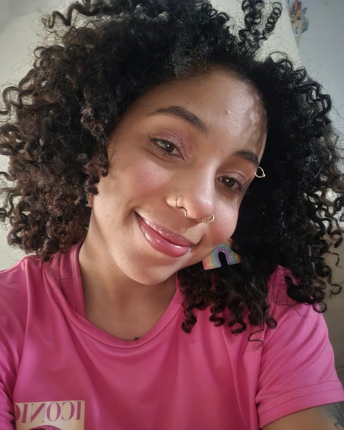

Sobre
Prazer, Isabel. Mas pode me chamar de Bebel.
Corto os excessos, afio os argumentos.

Sou formada em Letras (Português e Literaturas) pela UERJ e mestranda em Comunicação Social no PPGCOM UERJ, com pesquisa em dinâmicas de comunicação e narrativas urbanas. Na prática, isso significa que passo boa parte do tempo estudando como um texto chega ao leitor e o que ele provoca quando chega.
Comecei pela correção de redações para vestibulares e pelo trabalho em sala de aula. Avaliar textos por critérios técnicos me deu um olhar treinado para o detalhe: a palavra imprecisa, o argumento que não se sustenta, a transição que faz o leitor desistir.
O copywriting veio como extensão natural desse olhar. Se eu sei por que um texto perde pontos, sei também o que faz um texto ganhar atenção, confiança e clique. Hoje uno as duas coisas: escrevo e reviso com o rigor de quem corrige e com a estratégia de quem precisa converter.
Formação
- Bacharelado em Letras: Português e LiteraturasUERJ
- Licenciatura em LetrasUERJ
- Mestrado em Comunicação SocialPPGCOM UERJ · em andamento
Certificações
- CopywritingRD Station
- SEO e MarketingSantander Academy
Como eu trabalho
- 01Leitor primeiro
Antes de escrever, defino quem vai ler e o que essa pessoa precisa fazer depois. - 02Estrutura antes do estilo
O texto precisa funcionar no esqueleto antes de ficar bonito. - 03Revisão como etapa
Revisão não é acabamento. Todo texto passa por uma leitura crítica antes de ser entregue.
Experiência em destaque
- Avaliadora de redações Enem e UERJ em plataformas de correção, com cerca de 300 redações por mês
- Estágio de docência no Instituto de Aplicação da UERJ
- Materiais didáticos do 6º ano ao 3º ano do Ensino Médio
- Revisora textual freelancer de TCCs, artigos e dissertações em ABNT
- Pesquisa acadêmica e revisão textual em laboratórios da UERJ
- Residência pedagógica (CAPES/UERJ)
Quer ver como isso vira entrega?
Os cases mostram o desafio, as decisões e um trecho real de cada trabalho.
Ver cases